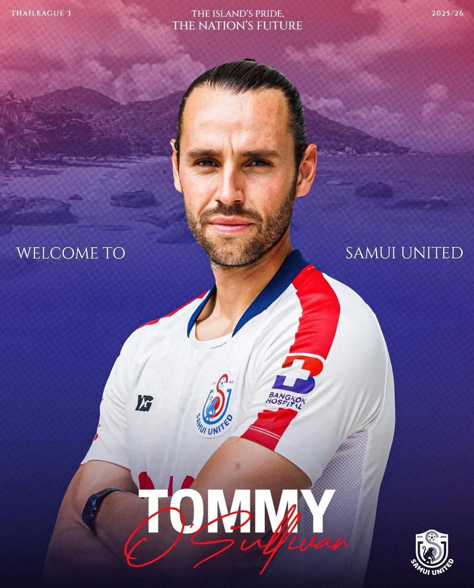

Player pathways
The Thailand
Reality Check.
Before you commit to a move, understand where your current level, playing role and footage could fit in Thai football.
Request a Reality Check
One-to-one assessment
What you’ll take away
A written view of your current level, the evidence behind it and the next steps worth taking.
What’s included
- A 45-minute conversation about your playing background and goals.
- A review of your recent footage and the role you play.
- An assessment of positional fit and an introduction to the Thai league landscape.
- A personalised written summary. We aim to deliver it within five working days of receiving your materials.
Proposed founding price · £79
Send an enquiry first. The team will confirm suitability, availability and the fee before booking.
Request assessment